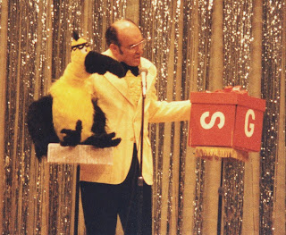

Another yellow bird (or two)
3/24/2011
{kind=link}

There may be some truth to the rumor - if you hang around with yellow birds enough, you start looking like one yourself!
This picture is from 198? when I was emcee of the evening show, FCM Conference, Winona Lake, Indiana. I still have the bird...(he's not for sale. I still have the jacket...couldn't give it away.)
The box? I built it to represent a large gift, and while I don't recall the exact application, I do remember that when I lifted the lid the sides were spring loaded so it automatically unfolded into an impressive 4' x 3' cross spelling out the words "God's Love", (the greatest gift).
We must have made our point that night. I remember when we returned to our dealer table after the night show, every similar bird puppet I had brought to sell had been claimed by someone. My dealer table was surrounded by people holding their puppets, waiting to pay for them. Quite a sight!
Note: The puppet was custom made by Carol Brown who long ago retired from puppet making.